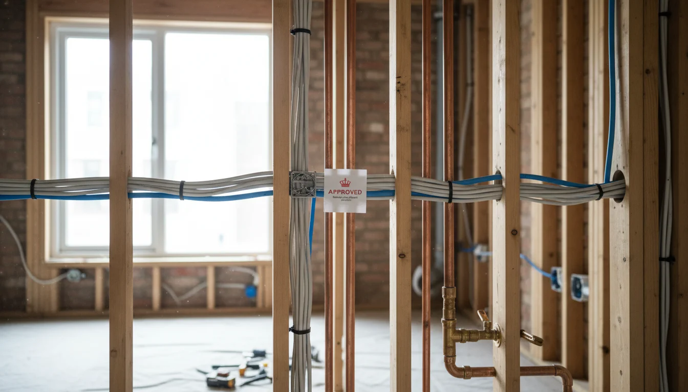
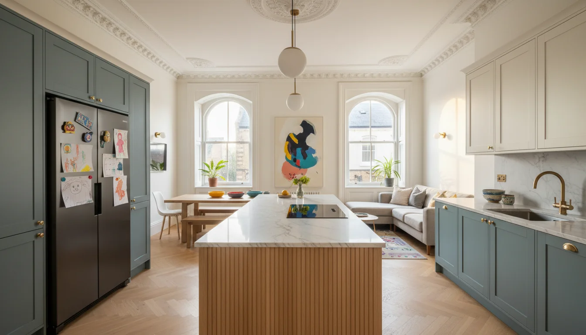

איך שיפוץ בלונדון באמת עובד - לוחות זמנים, עלויות, תהליך
למה שיפוץ בלונדון לוקח יותר זמן ממה שחשבתם
בישראל, קונים דירה ביום שני ויום חמישי הקבלן כבר שובר קירות. בלונדון, קונים דירה ואז מחכים. לסקרים. ל- planning permission. להסכמי party wall. לאישור building control. ואז מחכים עוד קצת.
שיפוץ דירה בלונדון הוא לא מה שישראלים מדמיינים. התהליך ארוך יותר, מורכב יותר, ומלא שלבים שפשוט לא קיימים בישראל. זה לא שהבריטים עצלנים - הם מסודרים. ויש הבדל.
הסיבה העיקרית: בלונדון הכל עובד ברצף. שלב אחרי שלב, כל אחד תלוי בקודמו. בישראל, חשמלאי ואינסטלטור עובדים במקביל, הקבלן דואג שזה יסתדר. בלונדון, יש סדר מוגדר - first fix לפני second fix, בדיקת building control בין לבין, ותיעוד בכל צומת. אי אפשר לקפוץ קדימה.
ויש עוד שכבה: רגולציה. planning permission, building regulations, party wall agreements, Licence to Alter - כל אחד מהם תהליך בפני עצמו עם לוח זמנים משלו. ולפעמים כולם רצים במקביל, ולפעמים אחד מעכב את כל השאר.
ולמי שחושב "אוקיי, אז נתחיל מוקדם" - נכון. אבל "מוקדם" בלונדון זה לא חודש לפני. זה שנה לפני. אם אתם רוצים דירה מוכנה לחופש הגדול של אוגוסט, אתם צריכים להתחיל את השלב הראשון לפחות בינואר של השנה שלפני. וזה תרחיש אופטימי.
לפני שמתחילים - סקרים, בדיקות ואישורים
השלב שישראלים לא מצפים לו. לפני שקבלן מגיע לדירה, יש שלב שלם של הכנה - ובלונדון, השלב הזה לוקח לפעמים יותר זמן מהשיפוץ עצמו.
| שלב | זמן משוער | עלות |
|---|---|---|
| סקר מבנה (building survey) | שבוע-שבועיים | £400-800 |
| planning permission | 3-6 חודשים | תלוי ב- borough |
| building regulations | 48 שעות - 5 שבועות | תלוי בהיקף |
| party wall agreement | שבועות-חודשים | £700-2,500 |
| Licence to Alter | שבועות-חודשים | תלוי ב- freeholder |
סקר מבנה - building survey. סוקר מוסמך בודק את מצב הנכס: מבנה, לחות, מערכות חשמל ואינסטלציה, גג, חלונות. בדירות ויקטוריאניות - ויש הרבה כאלה בשכונות שישראלים קונים בהן - הסקר חושף דברים שלא ראיתם: צנרת עופרת, חיווט ישן, אסבסט בתקרות. הסקר עולה £400-800 ולוקח שבוע-שבועיים.
ולמה זה חשוב? כי הסקר מגדיר את היקף השיפוץ. בלעדיו, אתם מתכננים שיפוץ קוסמטי ומגלים באמצע שהחשמל צריך חידוש מלא. הסקר חוסך הפתעות - ובלונדון, הפתעות עולות ביוקר.
planning permission - לא כל שיפוץ דורש אישור תכנוני, אבל אם אתם משנים חזית, מוסיפים שטח, או משנים שימוש - צריך. הזמן הרשמי: 8 שבועות. הזמן האמיתי בלונדון: 3-6 חודשים. כל borough עובד בקצב שלו, ואם יש התנגדויות שכנים או דרישות נוספות, ועדת התכנון מתכנסת - וזה מוסיף עוד שישה שבועות.
אם הנכס הוא listed building, ההגבלות מתגברות עוד יותר. בלונדון יש כ-25,000 מבנים לשימור, ובחלקם אי אפשר להחליף חלון בלי אישור.
building regulations - אישור building control. אם יש שינויים במבנה, בחשמל, באינסטלציה, או בבידוד - צריך. הגשת building notice מאושרת תוך 48 שעות. הגשת full plans לוקחת עד חמישה שבועות לקבלת החלטה.
party wall agreement - אם הדירה חולקת קיר עם שכנים ואתם מתכננים לעבוד עליו או לידו, חייבים להודיע חודשיים מראש. עלות: £700-2,500, תלוי במורכבות. אם השכנים מסכימים מהר - עניין של שבועות. אם הם מתנגדים - surveyor, ואז award, ואז עוד חודשיים.
Licence to Alter - בדירות leasehold, שזה רוב הדירות בלונדון, אי אפשר לעשות שינויים מבניים בלי אישור כתוב מבעל ה- freehold. התהליך לוקח שבועות עד חודשים, ולפעמים כולל דרישות מבעל הנכס שמוסיפות עלות.
אם אתם עדיין לפני הרכישה, כדאי לקרוא על מה לבדוק לפני שחותמים על נכס בלונדון - חלק מהבדיקות האלה צריכות לקרות לפני שקונים.
שלבי הביצוע - מה קורה ומתי

אחרי שכל האישורים בכיס, מתחיל השיפוץ בפועל. הנה מה שקורה, בסדר:
| שלב | זמן משוער |
|---|---|
| פירוק (strip-out) | 1-2 שבועות |
| עבודות מבנה (structural) | 2-4 שבועות |
| first fix | 2-4 שבועות |
| טייח ורצפות | 1-2 שבועות |
| second fix | 2-3 שבועות |
| מטבח וחדרי רחצה | 2-3 שבועות |
| צביעה וגמרים | 1-2 שבועות |
| snagging | 2-4 שבועות |
פירוק - strip-out (1-2 שבועות) - הורדת כל מה שנהרס: מטבח ישן, חדרי רחצה, ריצוף, תקרות, קירות שצריך להוריד. בשלב הזה מגלים הפתעות - אסבסט בתקרה, צנרת עופרת, חיווט שלא עומד בתקן. כל הפתעה כזו מוסיפה זמן ועלות. אם מוצאים אסבסט, חייבים חברה מורשית להסרה - זה דרישה חוקית, לא המלצה - וזה יכול לעכב שבוע-שבועיים.
עבודות מבנה - structural work (2-4 שבועות) - הזזת קירות, התקנת RSJ (קורות פלדה), חיזוק רצפות, פתיחת מרחבים. מהנדס קונסטרוקציה מאשר, building control מגיע לבדוק. בלי האישור שלהם, לא ממשיכים.
first fix (2-4 שבועות) - כל התשתיות שנכנסות לתוך הקירות לפני שסוגרים אותם: צנרת חדשה, חיווט חשמלי, חימום תת-רצפתי, מערכות אוורור. זה השלב שבו ההחלטות חייבות להיות סופיות - אחרי שטייחו, לשנות מיקום של שקע עולה פי עשר.
טייח ורצפות (1-2 שבועות) - טייח חדש על הקירות, הנחת רצפות. הטייח צריך לייבש - ובלונדון, עם הלחות, זה לוקח יותר זמן מאשר בישראל.
second fix (2-3 שבועות) - כל מה שמותקן אחרי הטייח: שקעים, מתגים, נקודות תאורה, דלתות פנים, ספי חלונות, מסגרות. החשמלאי והאינסטלטור חוזרים לחבר הכל.
מטבח וחדרי רחצה (2-3 שבועות) - התקנת ארונות מטבח, משטחים, כלים סניטריים, אריחים. ותזכרו: אם הזמנתם מטבח מיוחד, זמן האספקה הוא 8-12 שבועות. צריך להזמין הרבה לפני שמגיעים לשלב הזה.
צביעה וגמרים (1-2 שבועות) - צביעת קירות ותקרות, התקנת אביזרים, ידיות, מראות, מדפים. השלב שבו אתר בנייה מתחיל להריח כמו בית.
snagging (2-4 שבועות) - practical completion. הדירה ישימה, אפשר לגור בה - אבל יש רשימה של פגמים קטנים. צבע לא אחיד, דלת שלא נסגרת חלק, ידית עקומה, סיליקון שלא גמור באמבטיה. מעצבת טובה עוברת על כל פריט ברשימה ולא מאשרת תשלום סופי עד שהכל מתוקן. ישראלים ששומעים "practical completion" חושבים "נגמר". זה לא נגמר. עוד שבועות של תיקונים.
ושלב שהרבה ישראלים שוכחים: בדיקת building control סופית. בסוף העבודה, building control מגיע לבדיקה אחרונה ומנפיק completion certificate. בלי המסמך הזה, אין אישור שהעבודה נעשתה לפי התקנים. זה לא פורמליות - זה מסמך שתצטרכו אם תמכרו את הנכס בעתיד.
ומילה על המשפחה. אם הדירה מיועדת לחופשות משפחתיות - וזה המצב אצל רוב הלקוחות הישראלים - ההחלטות על חלוקת חדרים, מספר חדרי רחצה, ואחסון חייבות להיות סופיות לפני first fix. שינוי מיקום של חדר רחצה בשלב הטייח? זה לא שינוי. זה שיפוץ-של-שיפוץ. עם לוח זמנים חדש ותקציב חדש.
עלות שיפוץ דירה בלונדון - מספרים אמיתיים
עלות שיפוץ לונדון גבוהה מכל מקום אחר בבריטניה - פרמיה של 30-40% על הממוצע הארצי.
| רמת שיפוץ | עלות למ"ר |
|---|---|
| קוסמטי (צביעה, ריצוף, עדכון מטבח) | £800-1,500 |
| בינוני (שינויי layout, מערכות מלאות) | £2,000-3,500 |
| מלא עם שינויים מבניים | £3,000-5,500 |
מקורות: Beams Renovation, NGC Build. מחירי 2025-2026.
בואו נעשה חשבון מהיר. דירה של 100 מ"ר בשיפוץ בינוני: £200,000-350,000. על זה תוסיפו:
- VAT - 20% על כל העבודה. כן, גם על השיפוץ.
- עמלת ניהול פרויקט - 10-15% מעלות הפרויקט, אם יש מעצבת שמנהלת את הפרויקט.
- רזרבה - contingency של 15-20%. לא "אולי תצטרכו". "תצטרכו". תמיד יש הפתעות.
- אדריכל ומהנדס - שכר טרחה לתכנון, בדרך כלל 7-12% מעלות הבנייה, או שכר טרחה קבוע.
דירה של 100 מ"ר בשיפוץ בינוני, עם כל התוספות? אתם מסתכלים על £300,000-500,000 כולל הכל. ובפאונד, לא בשקל.
ועוד דבר שישראלים לא מצפים לו: תשלומים בלונדון הם stage payments - לפי שלבי התקדמות, לא מראש ולא בסוף. כל תשלום מותנה בהשלמת השלב הקודם. זה מגן עליכם, אבל דורש מישהו שנמצא על הקרקע ובודק שהעבודה באמת הושלמה לפני שמשחררים תשלום.
ועוד נקודה שרבים מפספסים: הצעות מחיר בלונדון כוללות בדרך כלל provisional sums - סכומים משוערים לפריטים שעדיין לא נבחרו סופית, כמו אריחים או משטח מטבח. הסכום האמיתי נקבע כשבוחרים את הפריט. אם בחרתם אריחים ב-£120 למ"ר במקום ה-£50 שהיה ב- provisional sum, ההפרש מתווסף לחשבון הסופי. זה לא חריגה מתקציב - זה ככה המערכת עובדת. רק צריך להבין אותה.
לפירוט של כל העלויות שמחכות לכם מעבר למחיר הרכישה - קראו על העלויות שאף אחד לא מספר לכם על נכס בלונדון.
 העלויות שאף אחד לא מספר לכם על נכס בלונדוןעלויות נכס בלונדון מעבר למחיר הרכישה. council tax כפול, service charge, ground rent, stamp duty עם שלוש תוספות - וחשבון שנתי שמפתיע את כולם
העלויות שאף אחד לא מספר לכם על נכס בלונדוןעלויות נכס בלונדון מעבר למחיר הרכישה. council tax כפול, service charge, ground rent, stamp duty עם שלוש תוספות - וחשבון שנתי שמפתיע את כולם
מה מאט את השיפוץ (ואיך מונעים את זה)
הגשתם בקשה, ה- borough סירב או דרש שינויים. עוד חודשיים-שלושה. מעצבת ואדריכל שמכירים את ה- borough הספציפי יודעים מה יעבור ומה לא, ומגישים בקשה שיש לה סיכוי מהרגע הראשון.
שכנים שלא מסכימים. צריך surveyor, ואז award, ואז ערעור אם הם עקשנים. יכול להוסיף חודשיים-שלושה.
מטבח מותאם? 8-12 שבועות מההזמנה. אריחים מאיטליה? 6-8 שבועות. אמבטיה ספציפית? 4-6 שבועות. צריך להזמין בשלב התכנון, הרבה לפני שמגיעים לשלב ההתקנה.
"ראיתי ב- Instagram מטבח מהמם, בואי נשנה הכל." כל שינוי באמצע שיפוץ עולה יותר ולוקח יותר. בלי מישהו שאומר "זה ישפיע על התקציב ב-X ועל לוח הזמנים ב-Y" - הפרויקט מתפוצץ.
אסבסט, צנרת עופרת, רצפה שצריך לחזק. את ההפתעות האלה מגלים בשלב הפירוק. סקר מקדים טוב מקטין את ההפתעות, אבל לא מבטל אותן - ולכן הרזרבה של 15-20% היא חובה.
חורף בלונדון מאט הכל. עבודות חוץ - גגות, חלונות, חזיתות - כמעט עוצרות בינואר-פברואר. גם בפנים, טייח לוקח יותר זמן להתייבש כשהלחות גבוהה. אם אפשר, תכננו את שלב הביצוע כך ששלבי החוץ יפלו באביב או קיץ.
קבלנים טובים בלונדון תפוסים חודשים קדימה. אם לא סגרתם קבלן בזמן, אתם מחכים לחלון הזמינות הבא שלו. תכננו לסגור קבלן 2-3 חודשים לפני שאתם רוצים שהעבודה תתחיל.
אם הדירה בבניין מנוהל, יש כללים. שעות עבודה מוגבלות (בדרך כלל 8:00-17:00 ימי חול בלבד). צריך לתאם שימוש במעלית משא. לפעמים חייבים פיקדון שמוחזר רק אחרי סוף העבודה. כל אלה לא מעכבים את הפרויקט אם יודעים עליהם מראש, אבל מפתיעים את מי שלא שאל.
איך מנהלים את לוח הזמנים מישראל

אם אתם יושבים בישראל, ניהול לוח הזמנים דורש מבנה ברור. לא "נתקשר כשיש חדש". מבנה.
אבני דרך - milestone לכל שלב. סוף פירוק, סוף מבנה, סוף first fix, סוף טייח, סוף second fix, התקנת מטבח, practical completion. כל אבן דרך עם תאריך יעד ותנאי מעבר.
דיווח שבועי - תמונות מהאתר, סיכום התקדמות, רשימת החלטות פתוחות. אם המעצבת מגיעה לאתר כל שבוע, אתם מקבלים את זה ביום הסיור. אם לא - אתם לא יודעים מה קורה.
נקודות החלטה - יש רגעים שבהם חייבים לקבל החלטה מהר: צבע הפוגה, כיוון הנחת הפרקט, מיקום מדויק של מזגן, גוון של ידיות. כשאתם בישראל ומקבלים תמונת WhatsApp של שלוש אפשרויות - צריך לענות באותו יום. החלטה שמחכה שלושה ימים עוצרת את הקבלן שלושה ימים. מעצבת שמכירה את התהליך מבפנים יודעת מה ההחלטות הבאות ומכינה אתכם שבוע-שבועיים מראש עם כל החומר, כך שכשהרגע מגיע - אתם מוכנים.
ביקורים באתר - כמה פעמים כדאי לעוף ללונדון במהלך שיפוץ? אם יש מעצבת שמנהלת על הקרקע - פעמיים-שלוש מספיק. פעם בשלב התכנון לראות את הדירה ולקבל החלטות, פעם בסוף first fix לאשר מיקומים לפני שסוגרים קירות, ופעם לפני practical completion לראות את התוצאה. בלי מעצבת על הקרקע? כל שבועיים. וזה לא ריאליסטי.
אסטרטגיית אוגוסט - הרבה משפחות ישראליות רוצות שהדירה תהיה מוכנה לחופש הגדול. מי שרוצה דירה מוכנה באוגוסט צריך להתחיל את שלב ההכנה לפחות 12 חודשים קודם. הנה למה:
- תכנון ואישורים - 3 חודשים (תרחיש אופטימי)
- חיפוש וסגירת קבלן - חודש
- ביצוע - 4-5 חודשים
- snagging ורהיטים - חודש
זה מביא אתכם לינואר-פברואר של השנה הקודמת. אם צריך planning permission? תוסיפו עוד 2-3 חודשים. פתאום אתם בנובמבר.
מט"ח - אתם משלמים הכל בפאונד. שינוי של כמה אגורות בשער עלול להיות אלפי שקלים על פרויקט של מאות אלפי פאונד. כדאי לתכנן המרות מראש ולא לפי השער של הרגע שבו הקבלן שולח חשבונית.
למדריך מעשי על איך מנהלים שיפוץ בלונדון מישראל בפועל - איך לנהל שיפוץ בלונדון מישראל.
שיפוץ דירה בלונדון הוא לא ספרינט. הוא מרתון עם כללים ברורים. מי שמבין את הכללים, מתכנן נכון, ושם על הקרקע מישהי שמכירה את המערכת - מגיע לקו הסיום עם דירה שעובדת בדיוק כמו שהמשפחה צריכה. בסופשבוע קצר של ההורים ובשלושה שבועות של אוגוסט עם הילדים.
מי שמנסה לקצר? משלם יותר ומחכה יותר.
אם כל זה נשמע כמו הרבה - זה כי זה הרבה. ככה אני עוזרת לעשות סדר בתהליך.
- שיפוץ דירה בלונדון לוקח 6-12 חודשים מהרגע שהחלטתם - כולל 2-6 חודשים של סקרים, אישורים ו- planning permission לפני שקבלן נוגע בקיר
- עלות שיפוץ בינוני בלונדון: £2,000-3,500 למ"ר, ועם VAT, ניהול פרויקט ורזרבה - דירה של 100 מ"ר עולה £300,000-500,000 כולל הכל
- כל ההחלטות על חלוקת חדרים, מטבח וחדרי רחצה חייבות להיות סופיות לפני first fix - שינוי אחרי זה עולה פי עשר ומאפס את לוח הזמנים
- מי שרוצה דירה מוכנה לאוגוסט צריך להתחיל לפחות 12 חודשים קודם - ואם צריך planning permission, עוד קודם
- ניהול מישראל עובד רק עם מבנה ברור: אבני דרך, דיווח שבועי, והחלטות שמוכנות מראש - לא "נתקשר כשיש חדש"